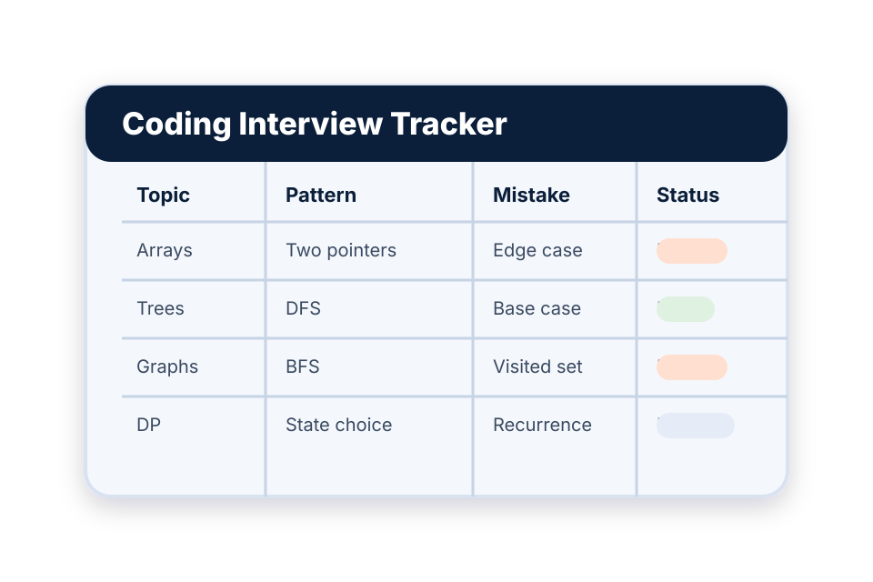

Overview
The interview tracker came from trying to make coding interview preparation less random. I used it to track problem types, mistakes, patterns, and topics I needed to revisit.
A process artifact for making practice less random.

The interview tracker came from trying to make coding interview preparation less random. I used it to track problem types, mistakes, patterns, and topics I needed to revisit.
Without a tracker, practice can feel productive while still being shallow. I wanted a way to see whether I was actually improving or just moving from problem to problem.
This is the basic path I followed while developing or analyzing the artifact.
This artifact is not flashy, but it shows discipline. It also makes the portfolio more honest because it shows process, not only finished products.
The biggest lesson was that improvement becomes clearer when I track the weak spots instead of hiding them.

Created a student-team task dashboard with projects, assignments, deadlines, comments, and status tracking.
View project
Designed a Flask/MySQL club catalog where students browse, save, and request to join organizations while officers manage clubs, events, and members.
View project
Analyzed weaknesses in login behavior, input handling, and session management, then explained practical ways to reduce the risk.
View project